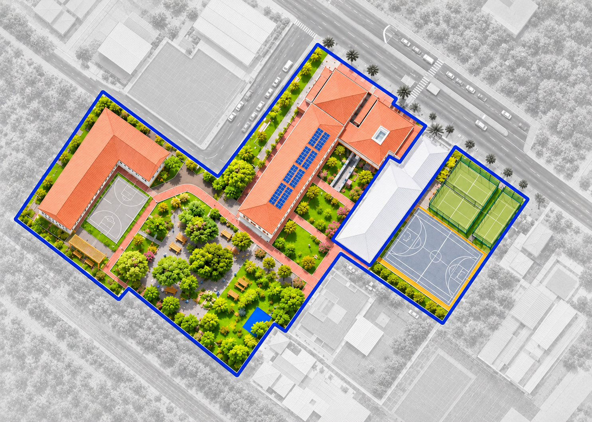

Explora nuestras instalaciones
Selecciona un número del plano o utiliza la lista para conocer cada espacio.

En móvil, desliza horizontalmente para explorar todo el plano. También puedes elegir cualquier zona en la lista inferior. Imagen ilustrativa: no es un plano técnico ni una medición catastral.
Prototipo de pruebas. Plano recreado digitalmente; fotografías reales facilitadas por el centro. Contenidos y permisos de publicación pendientes de validación institucional. Sin servicios de pago ni conexión con Google Maps.